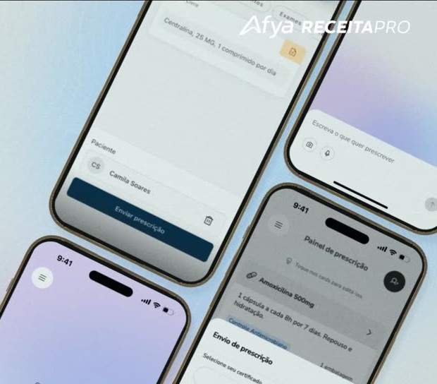
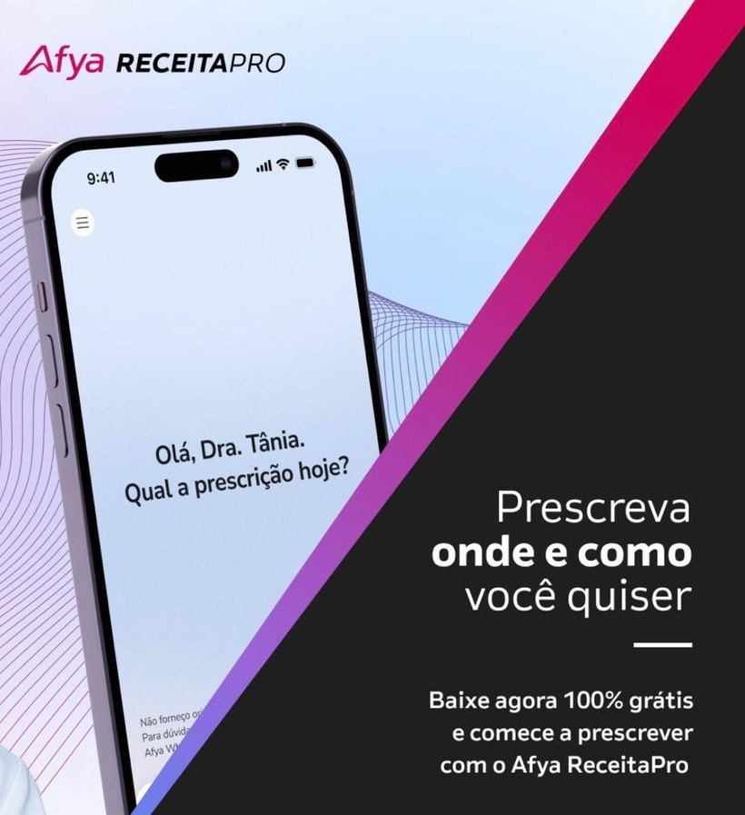
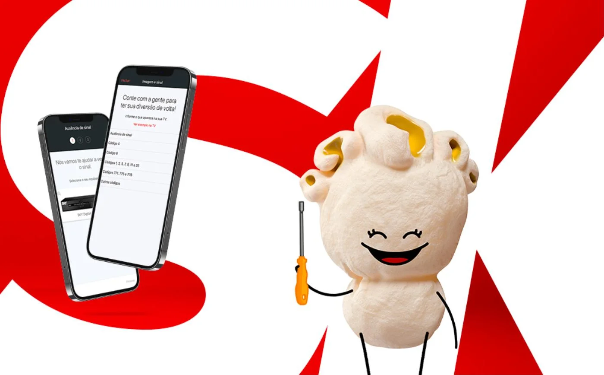

Algumas empresas com as quais já trabalhei
- Pulseshoje Gupy
Cases e eventos
Cases contados como história, e os palcos onde compartilho o que aprendo
Prescrição do Futuro
Afya · 2025 · Da tese a 4 squads e +57% YoY
Ler o case →
A primeira prescrição por smartwatch do Brasil
Afya ReceitaPro · 2026 · Renovação por voz
Ler o case → Ler caseIA + WhatsApp: prescrever conversando
Texto, voz e imagem · Afya ReceitaPro · 2025
Ler o case →
Volt
Startup early-stage · 2022 · App de skate 0→1
Ler o case → Ler caseMinha SKY
SKY · B2C mobile · Do self-service ao entretenimento · +3 mi downloads
Ler o case →
Formação e aprendizado contínuo
Coautora · artigo científico
There Is No Pill for Time: The Missing Determinant of Lifestyle MedicineAmerican Journal of Lifestyle Medicine
Sobre
Mais do que entregar funcionalidades, me interessa construir produtos relevantes, sustentáveis e que gerem impacto real.
Trabalho com Produto há 10 anos e o que me move é a curiosidade. Gosto de entender o porquê das coisas, ir atrás da causa dos problemas, juntar perspectivas diferentes e transformar o que é complexo em soluções que façam sentido para as pessoas e para o negócio.
Nos últimos cinco anos, mergulhei na saúde digital liderando produtos de prescrição médica, um ambiente de alta complexidade técnica e regulatória. Sou formada em Administração, pós-graduada em Neurociência e Comportamento e pesquisadora colaboradora em Medicina do Estilo de Vida.
Acredito em uma gestão de produto que une estratégia, evidências e colaboração para gerar impacto real.
Também falo sobre saúde no Instagram: @laissamargoni.lab ↗Interesses
- Leitura
- Praia
- Já joguei rugby
Práticas
- Musculação
- Yoga
- Meditação
- Alimentação
- Sono
- Gestão de estresse
- Terapia
Como trabalho
Quatro princípios por trás de cada decisão
Depoimentos
Como é trabalhar comigo
Trechos de recomendações publicadas no LinkedIn, editados para caber aqui e traduzidos quando necessário.
Contato
Vamos conversar.
Sobre produto, saúde digital ou o próximo desafio.